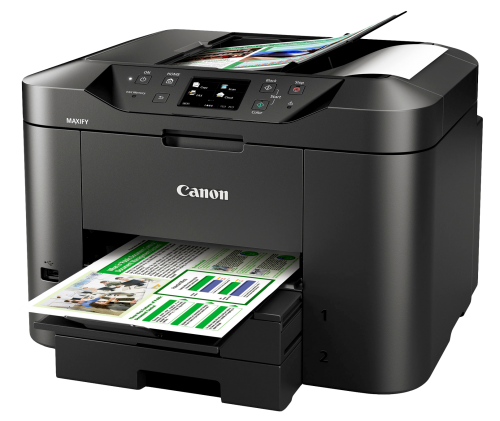

HCI Technologies
HCI Technologies
Topic assignment Artificial creatures
Homeostasis
Een printer heeft een behoefte aan inkt, een behoefte aan print-opdrachten, en een behoefte aan papier. Zonder deze factoren kan een printer niet zijn basisfunctie uitvoeren, namelijk afdrukken. Wanneer een printer veel print-opdrachten heeft doorgekregen van een computer, gaat hij afdrukken, de externe stimuli is dan de printopdracht en intern heeft de printer dan de behoefte om die opdracht af te drukken. Vervolgens zal de printer de opdracht uitvoeren aan de hand van zijn andere behoeftes; de inkt en het papier. Wanneer er weinig inkt is gaat hij niet alles afdrukken, of met vage kleuren printen. Wanneer er een tekort aan papier is, of het is op, gaat de printer een signaal afgeven wat de gebruiker waarschuwt. Als de printer een opdracht heeft en er maar één kleur inkt op is, zal de printer met de andere kleuren printen en ook een signaal aan de gebruiker afgeven die hem/haar op de hoogte stelt van een inkttekort. Weinig inkt en weinig papier zorgen er dus voor dat de printer waarschuwingen geeft aan de gebruiker, omdat hij niet een taak kan uitvoeren wanneer die behoeftes op zijn, een tekort aan print-opdrachten zorgt daar niet voor, want een printer hoeft niet altijd wat af te drukken.
Research
Toen ik ging zoeken naar voorbeelden van projecten met artificial creatures kwam ik bij het bedrijf Festo terecht. Bij hun Bionic Learning network zijn veel voorbeelden van artificial reatures te vinden. Wat ik heel gaaf vind aan hun projecten is dat ze heel erg kijken naar de natuur en hoe dat werkt en dat proberen te verwerken in innovatieve technologie. Ze hebben bijvoorbeeld de BionicFinWave ontworpen, gebaseeerd op vissen die hun finnen gebruiken met een soort golfbeweging. Deze robot kan onderwater zwemmen en bepaalde waardes doorgeven aan de gebruiker, zoals temperatuur of waterdruk. Op hun website zijn nog veel meer van dit soort voorbeelden te vinden, zelf vind ik het heel gaaf om te zien hoe je kan leren van de natuur en die kennis kan gebruiken in zulke moderne ontwikkelingen.
Links:
BionicFinWaves
Bionic Learning Network
Reflectie
Het bedenken wat precies de stappen waren van homeostase en hoe ik die op een printer kon toepassen vond ik enorm lastig, en ik heb daarom het college gedeelte over homeostase ook veel opnieuw gekeken, maar ik vond het vinden van een bedrijf wat artificial creatures maakt heel leuk. Ik kwam niet snel op een bedrijf wat echt creatures maakte, maar meer robots. Toch heb ik Festo gevonden en kreeg ik een heel gaaf beeld bij wat je zou kunnen bedenken om aan artificial creatures te maken. Ik vond het vooral gaaf om te zien hoe ze de natuur gebruiken en hoe deze kleine robots ook vaak heel erg lijken op hun dierlijke versie.